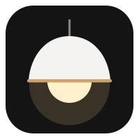

<!doctype html>
<html lang="zh-Hant">
<head>
<meta charset="utf-8">
<meta name="viewport" content="width=device-width,initial-scale=1">
<meta name="robots" content="noindex">
<title>回家之前 主視覺</title>
<link rel="icon" href="../logo.svg">
<link rel="preconnect" href="https://fonts.googleapis.com">
<link rel="preconnect" href="https://fonts.gstatic.com" crossorigin>
<link rel="stylesheet" href="https://fonts.googleapis.com/css2?family=Manrope:wght@500;600;700&display=swap">
<script type="importmap">{"imports":{"three":"https://cdn.jsdelivr.net/npm/three@0.180.0/build/three.module.js","three/addons/":"https://cdn.jsdelivr.net/npm/three@0.180.0/examples/jsm/"}}</script>
<!-- Key-visual studio: renders the prototype's three.js living room as cinematic stills.
     Open with ?shot=opener|cover|share|style-0…style-5 at the target viewport size (see SHOTS below).
     The page sets window.__ready once the frame is drawn, so a headless browser can screenshot it. -->
<style>
  :root{--ink:#29251f;--surface:#fbf8f2;--accent:#a2562d;--glow:#ffd98a;--font:"Manrope","PingFang TC","Noto Sans TC",sans-serif;--serif:"Songti TC","Noto Serif TC","PMingLiU",serif}
  *{box-sizing:border-box;margin:0}
  html,body{height:100%;background:#14110e;overflow:hidden}
  .frame{position:fixed;inset:0;color:var(--surface);font-family:var(--font)}
  .frame canvas{position:absolute;inset:0;width:100%;height:100%;display:block}
  /* Film finish: vignette, warm grade and grain sit over the render, never over the type. */
  .grade{position:absolute;inset:0;pointer-events:none;/* taste-skill-ignore: film vignette over the render only */background:radial-gradient(120% 95% at 50% 55%,transparent 55%,#0d0a0799 100%);mix-blend-mode:multiply}
  .warm{position:absolute;inset:0;pointer-events:none;background:#ff9a4a;opacity:.06;mix-blend-mode:soft-light}
  .grain{position:absolute;inset:-50%;pointer-events:none;opacity:.10;mix-blend-mode:overlay}
  .scrim{position:absolute;pointer-events:none}
  .type{position:absolute;display:grid;gap:.5em}
  .type.ink{color:var(--ink)}
  .type h1{font-family:var(--serif);font-weight:700;letter-spacing:-.02em;line-height:1.05}
  .type p{font-weight:500;opacity:.92;line-height:1.5;text-wrap:balance}
  .type .meta{font-size:.8em;opacity:.7}
  .logo{width:1.4em;height:1.4em}
  .brand{display:flex;align-items:center;gap:.4em;font-family:var(--serif);font-weight:700}
</style>
</head>
<body>
<div class="frame" id="frame">
  <div class="warm"></div><div class="grade"></div><canvas class="grain" id="grain" aria-hidden="true"></canvas>
  <div class="scrim" id="scrim"></div>
  <div class="type" id="type"></div>
</div>
<script src="catalog.js"></script>
<script type="module">
import { createRoom } from './room3d.js';
const { STYLES, PARTS } = window.HB_CATALOG;
const q = new URLSearchParams(location.search), id = q.get('shot') || 'cover';
const styleNames = Object.keys(STYLES);
const design = name => ({ style: name, ...Object.fromEntries(PARTS.map(p => [p.k, STYLES[name][p.k]])), storage: false, dusk: false });
const partsOf = v => Object.fromEntries(PARTS.map(p => [p.k, p.list[v[p.k]]]));
const vw = innerWidth;

// Camera positions are in metres inside the 5 × 4.2 m room: sofa on the back wall (-z), window on the right wall (+x).
const SHOTS = {
  opener: { size: '1080×1920', style: '暖調復古', mood: 'dusk', fov: 64, hide: ['lamp', 'art'], pos: [1.55, 1.1, 1.95], look: [-0.7, 0.7, -1.5],
    scrim: 'top:0;left:0;right:0;height:46%;/* taste-skill-ignore: scrim over the dark opening shot */background:linear-gradient(#0d0a07e6,#0d0a0700)',
    type: `top:7%;left:8%;right:8%;font-size:${vw / 18}px;justify-items:center;text-align:center`,
    html: `<h1 style="font-size:2.6em">回家之前</h1><p>玩完一趟故事，找到全家都喜歡的樣子。</p>` },
  cover: { size: '1920×1080', style: '日光北歐', mood: 'golden', beam: true, fov: 50, hide: ['chair'], pos: [-2.2, 1.25, 1.9], look: [-0.9, 0.8, -1.7],
    scrim: 'top:0;bottom:0;left:0;width:44%;background:#ffffff', ink: true,
    type: `left:5%;bottom:12%;width:36%;font-size:${vw / 52}px;white-space:nowrap`,
    html: `<h1 style="font-size:4.2em">回家之前</h1><p style="font-size:1.25em">在搬進去之前，先走進去住一次。</p><p class="meta">產品設計・風格定案</p>` },
  share: { size: '1080×1350', style: '無印日式', mood: 'golden', beam: true, fov: 46, pos: [1.0, 1.05, 0.95], look: [-0.55, 0.55, -1.35],
    scrim: 'bottom:0;left:0;right:0;height:34%;background:#ffffff', ink: true,
    type: `left:8%;right:8%;bottom:6%;font-size:${vw / 22}px`,
    html: `<h1 style="font-size:1.9em">我的家，原來長這樣</h1><p>測完居家人格，也看見了想住的客廳。</p><span class="brand" style="margin-top:.6em">回家之前</span>` },
};
// Each style gets the light it is best seen in: daylight for the bright, cool ones, lamp light for industrial.
const STYLE_MOOD = { 無印日式: 'golden', 日光北歐: 'day', 暖調復古: 'golden', 工業風: 'dusk', 現代簡約: 'day', 法式古典: 'golden', 輕奢: 'golden', 韓系奶油: 'day', 中古世紀: 'golden', 侘寂: 'dusk', 台式老宅: 'golden', 波希米亞: 'golden', 地中海: 'day', 沉穩酒店: 'dusk' };
styleNames.forEach((n, i) => {
  SHOTS['style-' + i] = { size: '1600×1200', style: n, mood: STYLE_MOOD[n], beam: STYLE_MOOD[n] === 'golden', fov: 56, pos: [1.95, 1.45, 1.6], look: [-0.75, 0.7, -1.2],
    scrim: 'bottom:0;left:0;right:0;height:24%;background:#ffffff', ink: true,
    type: `left:5%;bottom:5%;font-size:${vw / 44}px`,
    html: `<h1 style="font-size:2.6em">${n}</h1><p>${STYLES[n].note}</p>` };
});

const shot = SHOTS[id];
document.title = `回家之前 主視覺 · ${id}`;
// ?notext=1 renders the plate alone, for use inside the app where the UI supplies the type.
if (!q.get('notext')) {
  document.getElementById('scrim').style.cssText = shot.scrim;
  const type = document.getElementById('type'); type.style.cssText = shot.type; type.innerHTML = shot.html; type.classList.toggle('ink', !!shot.ink);
}

// Static film grain.
const g = document.getElementById('grain'); g.width = 512; g.height = 512;
{ const c = g.getContext('2d'), img = c.createImageData(512, 512); for (let i = 0; i < img.data.length; i += 4) { const v = Math.random() * 255; img.data[i] = img.data[i + 1] = img.data[i + 2] = v; img.data[i + 3] = 255; } c.putImageData(img, 0, 0); }

const room = await createRoom({ shadowSize: 2048 });
document.getElementById('frame').prepend(room.canvas);
const v = design(shot.style);
await room.apply(v, partsOf(v), STYLES[v.style]);
room.shoot(shot);
await document.fonts.ready;
// Two frames so textures uploaded during the first render are on screen.
requestAnimationFrame(() => requestAnimationFrame(() => { room.shoot(shot); window.__ready = true; }));
</script>
</body>
</html>
